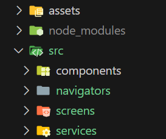
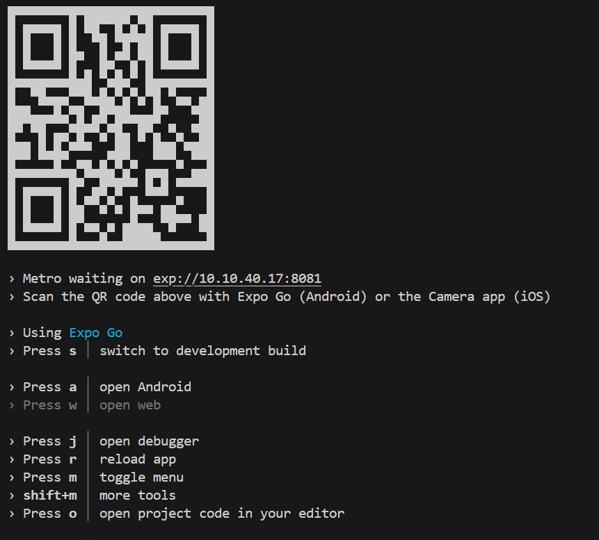

Neste tutorial iremos desenvolver um app usando React Native. Este aplicativo terá como principal funcionalidade a autenticação de usuários através de usuário e senha, utilizando o Firebase como nosso backend.
O Firebase é uma plataforma de desenvolvimento de aplicativos que fornece uma variedade de serviços, incluindo um sistema de autenticação robusto. Ao usar o Firebase, podemos facilmente configurar e gerenciar a autenticação do usuário em nosso aplicativo.
1. Acesse console.firebase.google.com e clique em "Adicionar projeto".
2. Defina um nome (ex.: iftm-rn-aulas-2025).
3. Google Analytics: opcional para esta aula; pode deixar desativado.
4. Crie o projeto. Anote o Project ID (é único e usado em integrações).
Dica: utilize projetos separados para sandbox (aulas/demos) e produção.
5. Em Visão geral do projeto, clique em "Adicionar app" → Web (</>).
6. Informe um apelido (ex.: rn-expo-websdk).
7. Não é necessário habilitar Hosting neste momento.
8. Clique em Registrar app e copie o objeto firebaseConfig (apiKey, authDomain, etc.).
9. Abra Autenticação → Métodos de login.
10. Selecione E-mail/senha e ative.
11. Salve as alterações.
Sem isso, createUserWithEmailAndPassword e signInWithEmailAndPassword falharão.
Templates de e-mail
• Personalize verificação e redefinição de senha (idioma, remetente, assinatura).
• Se usar URL de ação própria, configure Firebase Dynamic Links ou uma página sua.
Usuários e Proteção
• Força de senha: mínimo 6 (para demo). Em produção, exija mais.
• Avalie MFA (TOTP/SMS) em produção.
Domínios autorizados
• Necessário para OAuth/links de ação personalizados.
• Para e-mail/senha, normalmente não bloqueia. Se usar página própria, adicione seu domínio.
12. Em Autenticação → Usuários, clique Adicionar usuário.
13. Crie aluno@teste.com com uma senha simples para acelerar a demo.
• A apiKey do Firebase não é segredo (identifica o projeto).
• A segurança real está nas regras (Auth/Firestore/Storage) e monitoramento.
• Em produção, monitore cotas, uso de APIs e configure alertas.
14. Configurações do projeto (ícone de engrenagem) → Geral → Seus apps → SDK setup and configuration.
15. Copie novamente o objeto firebaseConfig quando precisar.
• Regras primeiro (Auth/Firestore/Storage).
• MFA e política de senhas fortes em produção.
• Auditoria e monitoramento de erros/quotas.
• Separar projetos (dev/qa/prod) e usar variáveis de ambiente (EAS).
• Verificar email antes de liberar áreas sensíveis (user.emailVerified).
Vamos criar uma aplicação React native. Primeiro abra um terminal e digite::
npx create-expo-app -tEscolha o template Blank e depois informe o nome do seu app
Um fluxo de autenticação em um mobile app é um processo que permite ao usuário acessar recursos protegidos do aplicativo, como dados pessoais, configurações ou funcionalidades restritas.
Para implementar um fluxo de autenticação em um app feito com React Native, é preciso usar bibliotecas específicas que facilitam a integração com serviços de autenticação externos, como Firebase, Auth0 ou AWS Amplify. Essas bibliotecas fornecem componentes e funções que permitem criar telas de login, cadastro, recuperação de senha e verificação de e-mail, além de gerenciar tokens, sessões e permissões de acesso. Alguns exemplos de bibliotecas que podem ser usadas para criar um fluxo de autenticação em um app React Native são: react-native-firebase, react-native-amplify e react-navigation.
A renderização condicional é a técnica mais indicada para construir uma lógica que protege as telas do app com acesso restrito. Considere o código abaixo:
{isAuthenticated
? (<HomeScreen />)
: (<LoginScreen />)
}Quando a variável `isAuthenticated` é verdadeira, o React Navigation exibe apenas a tela HomeScreen. Quando é falsa, exibe a tela LoginScreen. Isso impede a navegação para a tela protegidas quando o usuário não está logado, e para a tela de login quando está logado. Esse padrão é conhecido como Rotas protegidas.
As telas que requerem login estão "protegidas" e não podem ser acessadas se o usuário não estiver logado. Quando o valor de `isAuthenticated` muda, o comportamento do React Navigation também muda.
Quando usamos este padrão podemos implementar o fluxo de autenticação de forma simples, sem lógica adicional para garantir que a tela correta seja exibida.
npm install firebasenpx expo install @react-navigation/native react-native-screens react-native-safe-area-contextnpm install @react-navigation/native-stackPrecisamos criar algumas pastas para organizar o código. Veja a imagem abaixo

Primeiro crie uma pasta com o nome src na raiz do projeto. Depois crie as pastas: componentes, navigators, screens e services dentro da pasta src
import { initializeApp } from 'firebase/app';
import { getAuth } from 'firebase/auth';
import {
signOut,
signInWithEmailAndPassword,
createUserWithEmailAndPassword,
} from "firebase/auth";
const firebaseConfig = { /* colar config do Console */ };
const app = initializeApp(firebaseConfig);
export const auth = getAuth(app);
export const registrar = async (email, senha) => {
try {
await createUserWithEmailAndPassword(
auth,
email,
senha
);
alert("Usuário registrado com sucesso!");
} catch (error) {
alert("Erro: " + error.message);
}
};
export const login = async (email, senha) => {
try {
await signInWithEmailAndPassword(auth, email, senha);
alert("Login realizado!");
} catch (error) {
alert("Erro: " + error.message);
}
};
export const logout = async () => {
await signOut(auth);
};
import { useState } from "react";
import {
Text,
TextInput,
Pressable,
StyleSheet,
Alert,
KeyboardAvoidingView,
Platform,
} from "react-native";
import { signInWithEmailAndPassword } from "firebase/auth";
import { auth } from "../services/firebase";
import { useNavigation } from "@react-navigation/native";
export default function LoginScreen() {
const [email, setEmail] = useState("");
const [senha, setSenha] = useState("");
const [loading, setLoading] = useState(false);
const navigation = useNavigation();
async function handleLogin() {
if (!email || !senha)
return Alert.alert(
"Atenção",
"Preencha e-mail e senha."
);
try {
setLoading(true);
await signInWithEmailAndPassword(
auth,
email.trim(),
senha
);
// A navegação acontecerá automaticamente via onAuthStateChanged
console.log("Login bem-sucedido");
} catch (e) {
Alert.alert("Erro ao entrar", traduzErroFirebase(e));
} finally {
setLoading(false);
}
}
function traduzErroFirebase(e) {
const msg = String(e?.code || e?.message || e);
if (msg.includes("auth/invalid-email"))
return "E-mail inválido.";
if (msg.includes("auth/user-not-found"))
return "Usuário não encontrado.";
if (msg.includes("auth/wrong-password"))
return "Senha incorreta.";
if (msg.includes("auth/too-many-requests"))
return "Muitas tentativas. Tente novamente em instantes.";
return "Não foi possível realizar o login.";
}
return (
<KeyboardAvoidingView
style={styles.container}
behavior={
Platform.OS === "ios" ? "padding" : "height"
}>
<Text style={styles.titulo}>Entrar</Text>
<TextInput
style={styles.input}
placeholder="E-mail"
value={email}
onChangeText={setEmail}
keyboardType="email-address"
autoCapitalize="none"
autoCorrect={false}
textContentType="username"
/>
<TextInput
style={styles.input}
placeholder="Senha"
value={senha}
onChangeText={setSenha}
secureTextEntry
autoCapitalize="none"
textContentType="password"
/>
<Pressable
style={[
styles.botao,
loading && styles.botaoDisabled,
]}
onPress={handleLogin}
disabled={loading}>
<Text style={styles.botaoTexto}>
{loading ? "Entrando..." : "Entrar"}
</Text>
</Pressable>
<Pressable
onPress={() => navigation.navigate("Register")}>
<Text style={styles.link}>
Não tem conta? Cadastre-se
</Text>
</Pressable>
</KeyboardAvoidingView>
);
}
const styles = StyleSheet.create({
container: {
flex: 1,
padding: 24,
justifyContent: "center",
},
titulo: {
fontSize: 28,
fontWeight: "700",
marginBottom: 16,
textAlign: "center",
},
input: {
borderWidth: 1,
borderColor: "#ccc",
borderRadius: 12,
padding: 12,
fontSize: 16,
marginBottom: 12,
},
botao: {
backgroundColor: "#1e40af",
paddingVertical: 14,
borderRadius: 12,
marginTop: 4,
marginBottom: 8,
},
botaoDisabled: { opacity: 0.7 },
botaoTexto: {
color: "#fff",
fontWeight: "700",
textAlign: "center",
fontSize: 16,
},
link: {
color: "#1e40af",
textAlign: "center",
marginTop: 8,
textDecorationLine: "underline",
},
});import { useState } from "react";
import {
View,
Text,
TextInput,
Pressable,
StyleSheet,
Alert,
KeyboardAvoidingView,
ScrollView,
Platform,
} from "react-native";
import { createUserWithEmailAndPassword } from "firebase/auth";
import { auth } from "../services/firebase";
import { useNavigation } from "@react-navigation/native";
export default function RegisterScreen() {
const [email, setEmail] = useState("");
const [senha, setSenha] = useState("");
const [loading, setLoading] = useState(false);
const navigation = useNavigation();
async function handleRegister() {
if (!email || !senha)
return Alert.alert(
"Atenção",
"Preencha e-mail e senha."
);
if (senha.length < 6)
return Alert.alert(
"Atenção",
"A senha deve ter no mínimo 6 caracteres."
);
try {
setLoading(true);
await createUserWithEmailAndPassword(
auth,
email.trim(),
senha
);
Alert.alert("Sucesso", "Usuário cadastrado!");
} catch (e) {
Alert.alert(
"Erro ao cadastrar",
traduzErroFirebase(e)
);
} finally {
setLoading(false);
}
}
function traduzErroFirebase(e) {
const msg = String(e?.code || e?.message || e);
if (msg.includes("auth/email-already-in-use"))
return "E-mail já cadastrado.";
if (msg.includes("auth/invalid-email"))
return "E-mail inválido.";
if (msg.includes("auth/weak-password"))
return "Senha fraca (mínimo 6 caracteres).";
return "Não foi possível concluir o cadastro.";
}
return (
<KeyboardAvoidingView
style={styles.keyboardContainer}
behavior={
Platform.OS === "ios" ? "padding" : "height"
}>
<ScrollView
contentContainerStyle={styles.scrollContainer}
keyboardShouldPersistTaps="handled">
<View style={styles.container}>
<Text style={styles.titulo}>Criar conta</Text>
<TextInput
style={styles.input}
placeholder="E-mail"
value={email}
onChangeText={setEmail}
keyboardType="email-address"
autoCapitalize="none"
autoCorrect={false}
textContentType="username"
/>
<TextInput
style={styles.input}
placeholder="Senha (mín. 6)"
value={senha}
onChangeText={setSenha}
secureTextEntry
autoCapitalize="none"
textContentType="newPassword"
/>
<Pressable
style={[
styles.botao,
loading && styles.botaoDisabled,
]}
onPress={handleRegister}
disabled={loading}>
<Text style={styles.botaoTexto}>
{loading ? "Cadastrando..." : "Cadastrar"}
</Text>
</Pressable>
<Pressable onPress={() => navigation.goBack()}>
<Text style={styles.link}>
Já tem conta? Entrar
</Text>
</Pressable>
</View>
</ScrollView>
</KeyboardAvoidingView>
);
}
const styles = StyleSheet.create({
keyboardContainer: {
flex: 1,
},
scrollContainer: {
flexGrow: 1,
},
container: {
flex: 1,
padding: 24,
justifyContent: "center",
minHeight: 400,
},
titulo: {
fontSize: 28,
fontWeight: "700",
marginBottom: 16,
textAlign: "center",
},
input: {
borderWidth: 1,
borderColor: "#ccc",
borderRadius: 12,
padding: 12,
fontSize: 16,
marginBottom: 12,
},
botao: {
backgroundColor: "#16a34a",
paddingVertical: 14,
borderRadius: 12,
marginTop: 4,
marginBottom: 8,
},
botaoDisabled: { opacity: 0.7 },
botaoTexto: {
color: "#fff",
fontWeight: "700",
textAlign: "center",
fontSize: 16,
},
link: {
color: "#1e40af",
textAlign: "center",
marginTop: 8,
textDecorationLine: "underline",
},
});import { useState } from "react";
import {
View,
Text,
Pressable,
StyleSheet,
Alert,
} from "react-native";
import { auth } from "../services/firebase";
import { signOut } from "firebase/auth";
export default function HomeScreen( ) {
const { email } = auth.currentUser || {};
async function handleLogout() {
try {
await signOut(auth);
} catch (e) {
Alert.alert("Erro", "Não foi possível sair.");
}
}
return (
<View style={styles.container}>
<Text style={styles.titulo}>Bem-vindo!</Text>
<Text style={styles.subtitulo}>
Usuário autenticado:
</Text>
<Text style={styles.email}>{email}</Text>
<Pressable
style={styles.botao}
onPress={handleLogout}>
<Text style={styles.botaoTexto}>Logout</Text>
</Pressable>
</View>
);
}
const styles = StyleSheet.create({
container: {
flex: 1,
padding: 24,
justifyContent: "center",
alignItems: "center",
},
titulo: {
fontSize: 28,
fontWeight: "800",
marginBottom: 8,
},
subtitulo: { fontSize: 16, opacity: 0.7 },
email: {
fontSize: 18,
marginTop: 4,
marginBottom: 24,
fontWeight: "600",
},
botao: {
backgroundColor: "#ef4444",
paddingVertical: 14,
paddingHorizontal: 28,
borderRadius: 12,
},
botaoTexto: {
color: "#fff",
fontWeight: "700",
fontSize: 16,
},
});Arquivo src/navigators/MainStack.js
import { useEffect, useState } from "react";
import { ActivityIndicator, View } from "react-native";
import { createNativeStackNavigator } from "@react-navigation/native-stack";
import { onAuthStateChanged } from "firebase/auth";
import LoginScreen from "../screens/LoginScreen";
import RegisterScreen from "../screens/RegisterScreen";
import HomeScreen from "../screens/HomeScreen";
import { auth } from "../services/firebase";
const Stack = createNativeStackNavigator();
export default function MainStack() {
const [initializing, setInitializing] = useState(true);
const [user, setUser] = useState(null);
useEffect(() => {
const unsub = onAuthStateChanged(auth, u => {
setUser(u ?? null);
setInitializing(false);
});
return unsub;
}, []);
if (initializing) {
return (
<View
style={{
flex: 1,
justifyContent: "center",
alignItems: "center",
}}>
<ActivityIndicator size="large" />
</View>
);
}
// Se houver usuário: só mostra Home; se não, mostra Login/Register
return (
<Stack.Navigator
screenOptions={{
headerTitleAlign: "center",
}}>
{user ? (
<Stack.Screen
name="Home"
component={HomeScreen}
options={{ title: "Home" }}
/>
) : (
<>
<Stack.Screen
name="Login"
component={LoginScreen}
options={{ title: "Entrar" }}
/>
<Stack.Screen
name="Register"
component={RegisterScreen}
options={{ title: "Cadastrar" }}
/>
</>
)}
</Stack.Navigator>
);
}import { NavigationContainer } from "@react-navigation/native";
import MainStack from './src/navigators/MainStack';
export default function App() {
return (
<NavigationContainer>
<MainStack />
</NavigationContainer>
);
}Para testar o app execute, dentro da pasta raiz do projeto, no terminal o comando
npm startSe tudo estiver certo, aparecerá no terminal o seguinte:

Pressione a tecla ‘a' para abrir o app no dispositivo móvel, que pode ser o dispositivo real ou um emulador.
Sugestões de alterações no código para aprender mais
sendPasswordResetEmail(auth, email)src/screens`, `src/services`, `src/components`.